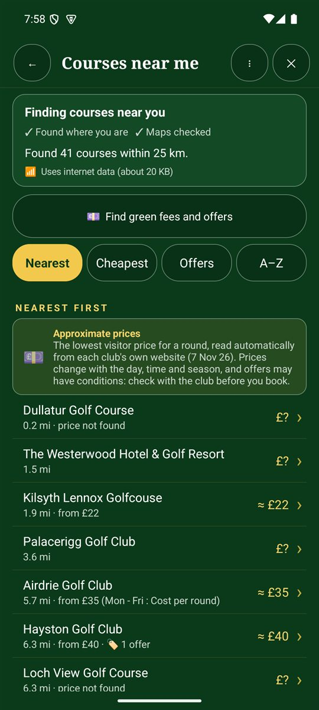
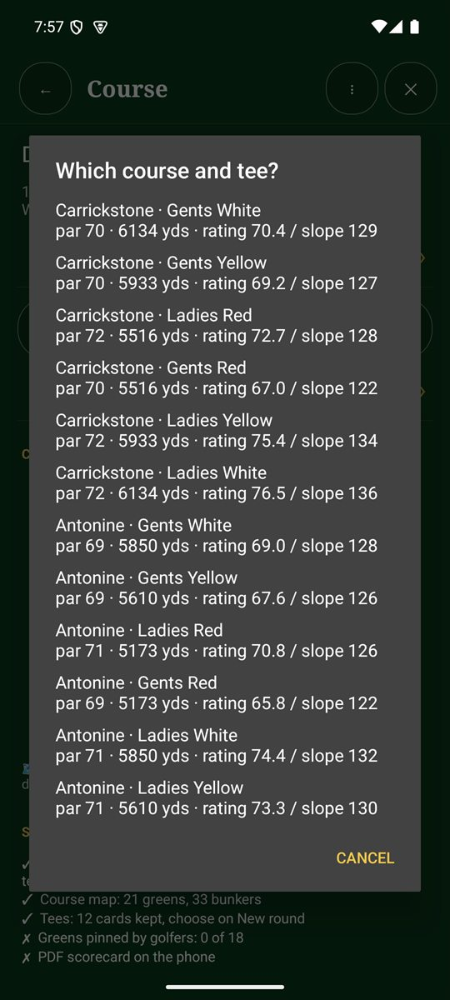
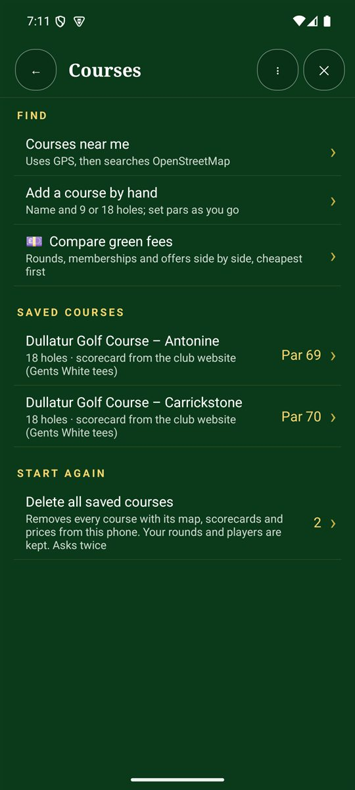

Courses near me
- Tap Find a local club on the Home screen, or Courses › Courses near me on the Scorecard+ menu.
- Allow location. While it searches, a golf ball rolls towards the flag and the app shows what it's doing, such as Finding where you are….
- You'll see every golf course within 25 km, with its distance and, where the club's website lists one, an approximate visitor price.
- Sort by Nearest, Cheapest, Offers or A–Z.
- Tap a course to save it. Its holes (par and stroke index) and course map are downloaded where they're available.

Course details, tees and rating
Tap a saved course to see its details: where the scorecard came from, the course map (greens, fairways, tees and bunkers) and a quick ⛳ Start a round here button. Tap Change tee or course to see every set of tees. Where the club publishes a scorecard, the app reads each set of tees with its pars, stroke index and yards, plus the course rating and slope that show how hard the course plays.
- Choose your tees when you start a round, so yardages and handicap strokes match the tees you play.
- Rating and slope are also used for your estimated handicap index.
- 🔄 Refresh course gets the latest scorecard and map from shared course data, the club website and OpenStreetMap.

Green fees and offers
Tap 💷 Find green fees and offers, or Compare green fees on the Courses screen, to see rounds, memberships and offers side by side, cheapest first.
Your saved courses
The Courses screen lists the courses you've saved, with their par and where the scorecard came from. Tap one to see its holes and details.
If the holes are missing or wrong
Not every course has its holes mapped. If they're missing, the course is saved with par 4 holes, and you can fix it:
- Find the scorecard on the web: the app reads the club's scorecard page or PDF. It asks before downloading a PDF.
- Enter pars now: tap 3, 4 or 5 for each hole from the course scorecard.
- Scan the club's card: see Scan a paper scorecard.
- As you play: tap ✎ edit on the hole page.
Add a course by hand
Tap Add a course by hand, give it a name and choose 9 or 18 holes. Set the pars as you go.
